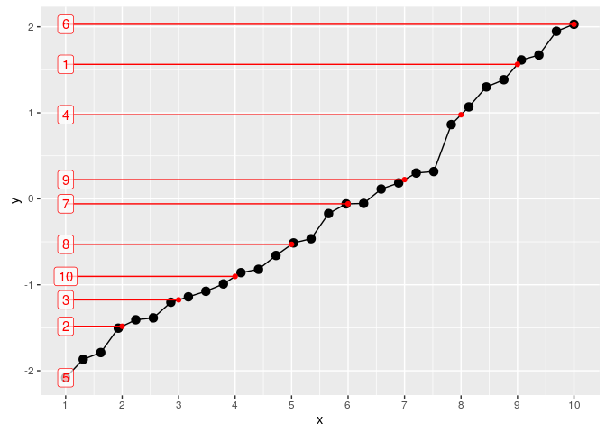

histmatch(1:10, 1:10)
#> [1] 1 2 3 4 5 6 7 8 9 10
histmatch(1:10, 2:11)
#> [1] 2 3 4 5 6 7 8 9 10 11
histmatch(1:11, 5:6)
#> [1] 5.0 5.1 5.2 5.3 5.4 5.5 5.6 5.7 5.8 5.9 6.0
histmatch(1:11, c(2, 4, 5))
#> [1] 2.0 2.4 2.8 3.2 3.6 4.0 4.2 4.4 4.6 4.8 5.0In the following plot, the black and red elements correspond to the target and source distribution, respectively.
set.seed(20161031)
x_source <- runif(10)
x_source
#> [1] 0.78 0.24 0.36 0.75 0.02 1.00 0.74 0.58 0.75 0.49
x_target <- rnorm(30)
x_target
#> [1] -0.659 1.385 1.301 -0.513 1.672 -1.504 -0.059 1.948 -1.788 -0.464 1.614 -0.820 -2.081
#> [14] 2.029 -0.054 -0.990 -1.385 1.069 -0.859 0.184 0.317 -1.867 -1.407 0.113 -1.203 0.300
#> [27] -1.140 -1.075 -0.171 0.863
histmatch_data(x_source, x_target) %>% plot
Timing
For random vectors, which are generated using the following function:
r <- function(e) runif(10 ** e)#> # A tibble: 9 × 2
#> expr median_ms
#> <fctr> <dbl>
#> 1 r(4) 0.38
#> 2 histmatch(r(3), r(3)) 0.99
#> 3 histmatch(r(3), r(3), r(3)) 1.06
#> 4 histmatch(r(3), r(4)) 2.28
#> 5 histmatch(r(3), r(4), r(4)) 2.81
#> 6 histmatch(r(4), r(4)) 4.22
#> 7 histmatch(r(4), r(4), r(4)) 4.78
#> 8 histmatch(r(4), r(3)) 2.70
#> 9 histmatch(r(4), r(3), r(3)) 2.77